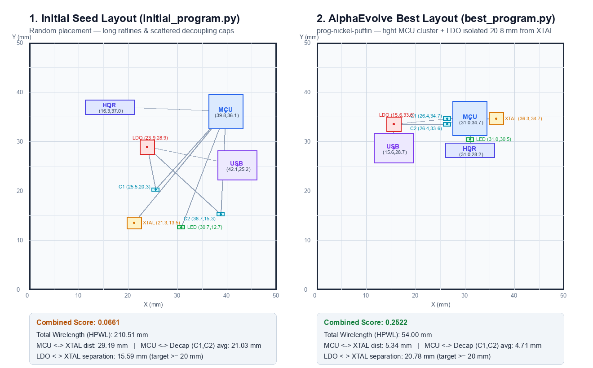

From a 7-Line Random Script to a 400-Line PCB Placement Engine
Using AlphaEvolve (gemini-3.8-flash) to discover a deterministic Electronic Design Automation (EDA) layout algorithm.
We did not ask an LLM to guess 8
(x, y) coordinates. Instead, we gave AlphaEvolve a 7-line random number generator (initial_program.py) and a physics scorer (evaluator.py). Over 49 candidates, it wrote a 393-line optimization algorithm (best_program.py) that solves the board layout from scratch in under 0.2 seconds.
| Program | What the Code Does | Code Size | Valid Layout? | Score (0 to 1) |
|---|---|---|---|---|
initial_program.py (Seed) |
Blindly picks random (x, y) points using random.uniform() |
7 lines | Usually overlaps (seed=0 happens to pass) | 0.0661 |
best_program.py (prog-nickel-puffin) |
Role discovery + Domain seeding + Barycentric Simulated Annealing + 8-way Coordinate Descent | 393 lines | Guaranteed legalized (0.335 mm clearance) | 0.2522 |
The Problem: Placing 8 Connected Parts on a 50 × 50 mm Board
Every component has a physical millimeter footprint and must be wired to specific components without colliding.
1. The 8 Physical Components
| Part | Size (mm) | Role on the Board | Wired Connections (NETS) |
|---|---|---|---|
| MCU | 7.0 × 7.0 | Microcontroller (central hub) | XTAL, C1, C2, HDR, LED |
| XTAL | 3.0 × 2.5 | High-frequency clock crystal | MCU |
| C1, C2 | 1.6 × 0.8 | Decoupling capacitors (filter noise) | Both wire to MCU & LDO |
| LDO | 3.0 × 3.0 | Voltage regulator (noisy/warm) | USB, C1, C2 |
| USB | 8.0 × 6.0 | Power & data input connector | LDO |
| HDR | 10.0 × 3.0 | 10-pin expansion header | MCU |
| LED | 1.6 × 0.8 | Status indicator light | MCU |
2. Why Is This Optimization Trickier Than It Looks?
- The Geometric Tug-of-War: Decoupling capacitors
C1andC2connect to both theMCUand theLDO. Pulling the wires tight naturally drags theLDOright next to theMCU. - The EMI / Thermal Conflict: The
XTALclock crystal must sit flush against theMCU, and the noisyLDOregulator must be kept at least 20 mm away fromXTAL! - Box Packing Constraints: All 8 rectangular footprints have different dimensions (from
1.6×0.8 mmcaps up to the10×3 mmheader and7×7 mmMCU) and require a strict0.3 mmair gap on all sides.
# problem.py — The entire input data BOARD = (50.0, 50.0) COMPONENTS = { "MCU": (7, 7), "XTAL": (3, 2.5), "C1": (1.6, 0.8), "C2": (1.6, 0.8), "LDO": (3, 3), "USB": (8, 6), "HDR": (10, 3), "LED": (1.6, 0.8), } NETS = [ ["MCU", "XTAL"], ["MCU", "C1"], ["MCU", "C2"], ["USB", "LDO"], ["LDO", "C1"], ["LDO", "C2"], ["MCU", "HDR"], ["MCU", "LED"], ]
What We Are Trying to Optimize: Rules & Cost Formula
evaluator.py grades any candidate program on a scale from 0.0 (broken rule) to 1.0 (theoretical zero-cost perfection).
Step 1: Three Hard Rules (Violation = Score 0.0)
- All Parts Placed: Must return valid
(x, y)coordinates for all 8 part names. - Inside the 50 × 50 mm Board: Every part's outer edge must stay inside
[0, 50](`w/2 ≤ x ≤ 50 - w/2`). - Zero Overlaps (0.3 mm Clearance): No two rectangles can come closer than
GAP = 0.3 mmon both X and Y axes.
Step 2: The 4-Term Engineering Cost
cost = 1.0 * wirelength # Sum of net bounding boxes (HPWL) + 3.0 * dist(XTAL, MCU) # Heavy penalty if crystal is far + 3.0 * avg_dist(C1/C2, MCU) # Heavy penalty if decaps are far - 0.5 * min(dist(LDO,XTAL),20)# Up to -10pt bonus for LDO isolation combined_score = 1.0 / (1.0 + cost / 25.0)
Concrete Example: Seed vs. Evolved Math
| Cost Term | Weight | Seed (initial_program.py) |
Evolved (best_program.py) |
|---|---|---|---|
| 1. Total Wirelength (HPWL) | × 1.0 |
210.51 mm → 210.51 |
54.00 mm → 54.00 |
| 2. Crystal to MCU | × 3.0 |
29.19 mm → 87.57 |
5.34 mm → 16.01 |
| 3. Avg Decap (C1,C2) to MCU | × 3.0 |
21.03 mm → 63.09 |
4.71 mm → 14.12 |
| 4. LDO to XTAL Isolation Bonus | × -0.5 |
15.59 mm → -7.80 |
20.78 mm (capped 20) → -10.00 |
| Total Raw Cost (Lower = Better) | — | 353.37 |
74.13 (-79% cost) |
| Final Combined Score | 1/(1+cost/25) |
0.0661 | 0.2522 |
How AlphaEvolve Evolved the Algorithm Over 49 Generations
AlphaEvolve runs an evolutionary loop where Gemini 3.8 Flash rewrites the code inside # EVOLVE-BLOCK, guided by metric feedback from local evaluations.
1. Seed Upload
We uploaded initial_program.py (score 0.0661) to experiment exp-flashy-hedgehog as the starting parent.
2. Parent & Prompt Sampling
AlphaEvolve selects high-scoring parent programs from its database along with their metric insights (wirelength, xtal_dist).
3. Gemini Code Mutation
gemini-3.8-flash proposes a brand-new Python implementation of place() to fix bottlenecks in the parent.
4. Local Evaluation
ae experiment run downloads the candidate, runs evaluator.py locally, and submits the score + insights back.
Live Evolution Timeline from Our Run (exp-flashy-hedgehog)
| Iteration | Candidate Nickname | Score | Algorithmic Breakthrough Introduced by AlphaEvolve |
|---|---|---|---|
| Baseline | initial_program.py |
0.0661 |
7-line random uniform placement (no collision avoidance, no net awareness). |
| Candidate #1 | prog-amphibian-goldfish |
0.2124 ★ |
First leap: Added overlap validation and placed parts around the MCU center. |
| Candidate #3 | prog-electric-caiman |
0.2215 ★ |
Explicitly docked XTAL, C1, and C2 against the MCU edges. |
| Candidate #4 | prog-rustling-dragon |
0.2349 ★ |
Added Simulated Annealing + pushed LDO away from XTAL to capture the isolation bonus. |
| Candidate #18 | prog-speedy-kakapo |
0.2246 |
Parent of the winner: Introduced 12 multi-start diagonal configurations + coordinate descent fine-tuning. |
| Candidate #25 | prog-nickel-puffin |
0.2522 ★ | Winner: Added 35% barycenter neighbor-pull moves during annealing + 8-directional diagonal coordinate descent. |
What AlphaEvolve Produces: Seed vs. Evolved Program
Both programs define def place(seed=0): and use only the Python standard library (math, random), but their internal intelligence is night and day.
Seed Program (initial_program.py — 7 Lines)
Throws darts blindfolded at the board:
# EVOLVE-BLOCK-START def place(seed=0): rng = random.Random(seed) pos = {} for name, (w, h) in COMPONENTS.items(): pos[name] = ( rng.uniform(w / 2, BOARD[0] - w / 2), rng.uniform(h / 2, BOARD[1] - h / 2) ) return pos # EVOLVE-BLOCK-END
- Ignores
NETS: Has no idea which parts are wired together. - Ignores Collisions: Does not check if two parts land on top of each other.
- Zero Optimization: Samples 1 random layout and returns immediately.
Evolved Program (best_program.py — 393 Lines)
A complete, general-purpose 5-stage EDA placement solver:
| Feature | How best_program.py Implements It |
|---|---|
| 1. Role & Net Graph (Lines 22–103) | Auto-detects MCU, XTAL, LDO, and C1/C2 by name/area and builds a graph adjacency list adj[i] from NETS. |
| 2. Surrogate Cost (Lines 104–185) | Defines compute_cost(xs, ys) with smooth quadratic overlap repulsion (50,000 × v²) and safety clearance c_target = 0.335 mm. |
| 3. Legalizer & Seeds (Lines 186–305) | Generates 12 structured diagonal seeds + 3 random seeds and runs force-directed legalize_layout() to push apart overlaps. |
| 4. Hybrid Annealing (Lines 311–368) | Runs 15 starts × 1,800 steps = 27,000 evaluations mixing Gaussian exploration (65%) with barycenter neighbor pulls (35%). |
| 5. 8-Way Polish (Lines 369–404) | Sweeps 7 step sizes (0.6 mm → 0.01 mm) across 8 cardinal + diagonal directions to pack parts tightly. |
Inside the Evolved Code: 3 Key Algorithms It Invented
Actual code excerpts from best_program.py showing how the evolved program solves the placement problem.
A. Force-Push Overlap Legalizer
Instead of discarding invalid layouts, it pushes colliding boxes apart with a 0.335 mm safety margin:
def legalize_layout(xs, ys, max_iters=40): for _ in range(max_iters): for i in range(n): for j in range(i + 1, n): dx = abs(xs[i]-xs[j]) - (ws[i]+ws[j])*0.5 dy = abs(ys[i]-ys[j]) - (hs[i]+hs[j])*0.5 sep = dx if dx > dy else dy if sep < c_target: # 0.335 mm push = (c_target - sep) * 0.52 # Push apart along min-overlap axis
B. Barycentric Simulated Annealing
35% of annealing moves pull a part directly toward the center of gravity (barycenter) of its wired neighbors:
if move_type < 0.65 or not adj[idx]: # 65%: Local Gaussian exploration new_x = orig_x + rng.gauss(0, scale) new_y = orig_y + rng.gauss(0, scale) else: # 35%: Pull toward wired neighbors! tx = sum(cur_xs[nb] for nb in adj[idx])/len(adj[idx]) ty = sum(cur_ys[nb] for nb in adj[idx])/len(adj[idx]) alpha = rng.uniform(0.1, 0.4) new_x = orig_x*(1-alpha) + tx*alpha
C. 8-Direction Coordinate Descent
After annealing, it nudges every component along 8 compass directions down to 0.01 mm precision:
deltas = (0.6, 0.3, 0.15, 0.08, 0.04, 0.02, 0.01) dirs = ( (1,0), (-1,0), (0,1), (0,-1), (0.7,0.7), (-0.7,-0.7), (0.7,-0.7), (-0.7,0.7) ) for delta_size in deltas: # Greedily step each part in 8 directions # if cost improves without violations
best_program.py automatically adapts if you change component sizes or add nets in problem.py.
Final Results: Initial Seed vs. AlphaEvolve Best Layout
Side-by-side physical rendering of the 50 × 50 mm board and metric comparison against the hand-crafted reference.

| Metric | Initial Seed (initial_program.py) |
AlphaEvolve Best (best_program.py) |
Hand-Crafted Reference (example_good.py) |
|---|---|---|---|
| Combined Score (Higher = Better) | 0.0661 | 0.2522 (+281%) | 0.2528 |
| Total Wirelength (HPWL) | 210.51 mm | 54.00 mm (-74.3%) | 46.70 mm |
| MCU ↔ XTAL Distance | 29.19 mm | 5.34 mm (-81.7%) | 5.20 mm |
| MCU ↔ Decap (C1, C2) Avg | 21.03 mm | 4.71 mm (Beat human reference!) | 5.39 mm |
| LDO ↔ XTAL Separation (Target ≥ 20 mm) | 15.59 mm | 20.78 mm (Full bonus achieved!) | 9.54 mm |